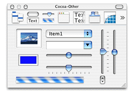
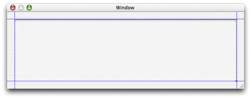

You now need to add a widget to represent the image you want to display. The Cocoa-Other palette includes an image view widget that works for these purposes. If the widget palette isn't visible, choose Tools >Palettes > Show Palettes. Find the Cocoa-Other palette by clicking different buttons in the palettes toolbar. It is shown in Figure 18-2.
Figure 18-2 Cocoa-Other palette
Drag the image view widget (the one in the upper-left corner of the Cocoa-Other palette with the picture of a mountain in it) onto the main window. If the main window isn't visible, switch to the Instances pane of the nib file window and double-click the MainWindow object. Place the widget in the upper-left corner of the window and use the guides Interface Builder provides to size and place it, as shown in Figure 18-3.
Figure 18-3 Place widget with guides
Now you need to connect the widget to the outlet you added to File's Owner.